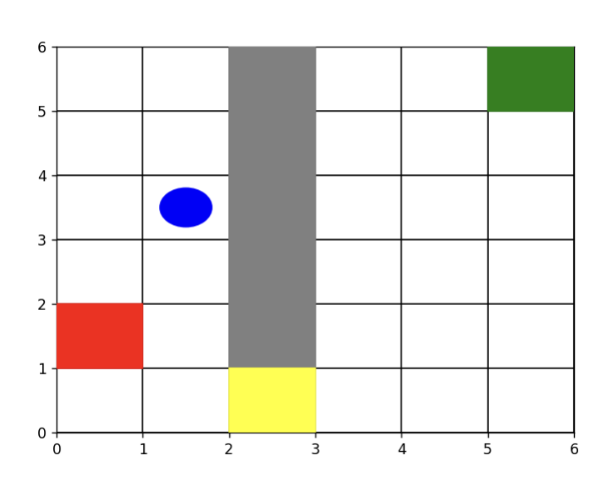
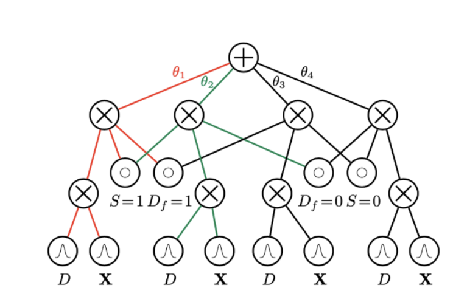

Academic Projects
Future-Task-Consideration-to-Mitigate-Side-Effects-in-RL
Implemented an approach to mitigating negative side effects such as irreversible tasks of an autonomous agent by integrating auxiliary reward for future tasks on a Q-learning approach in a grid-world environment of an agent, a movable box and future goal states in both stochastic and deterministic settings. Simulations were run for 100 episodes and the number of times the box was broken was compared in each case. (Spring 2024)
Investigating and Optimizing Fairness of Probabilistic Models
Examined various probabilistic graphical models, including Naive Bayes Classifiers, Bayesian Networks and Probabilistic Circuits to assess their effectiveness in structure learning. The evaluation was based on a standardized metric called Discriminant score, which quantifies fairness. Discrimination patterns were analyzed by varying sensitive attributes, both present and absent and the results were then compared. The results emphasized the critical role of bias mitigation in predictive analytics to ensure fair decision-making. (Spring 2023)
Certifications
National Talent Search Exam NTS Scholarship - (top 1000 in the country), August 2012